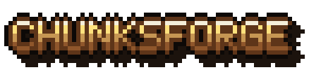
Editor de mapas fantásticos y topográficosFantasy and topographic map editor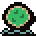
¿Qué es Chunksforge?What is Chunksforge?
Un editor de mapas para mundos inventados. Esculpes el terreno como si fuera arcilla, el agua y las costas aparecen solas, y encima colocas montañas, bosques, ríos, ciudades y nombres. Cuando el mundo está listo, en la segunda etapa lo repartes en reinos con sus fronteras, capitales y territorios en disputa. Todo con una interfaz de RPG retro en pixel art. A map editor for invented worlds. You sculpt the terrain like clay, the water and coastlines appear on their own, and on top you place mountains, forests, rivers, cities and names. When the world is ready, the second stage lets you divide it into kingdoms with their borders, capitals and disputed territories. All with a retro pixel art RPG interface.
¿Para qué sirve?What is it for?
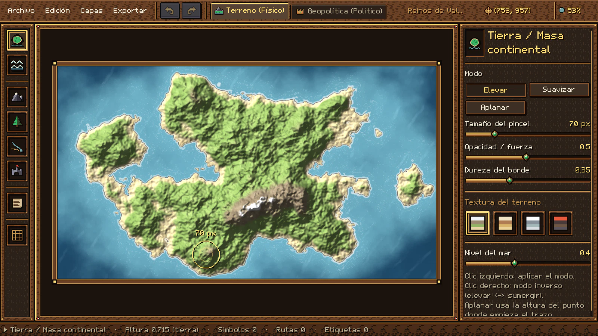
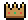
Dos etapas, un mismo mapaTwo stages, one map
Primero el mundo físico; después, quién gobierna cada rincón. Las dos etapas viven en el mismo proyecto y se cambian con un clic (o con Ctrl+1 y Ctrl+2): la capa política se superpone al terreno sin modificarlo. First the physical world; then, who rules every corner. Both stages live in the same project and you switch with one click (or with Ctrl+1 and Ctrl+2): the political layer sits on top of the terrain without changing it.
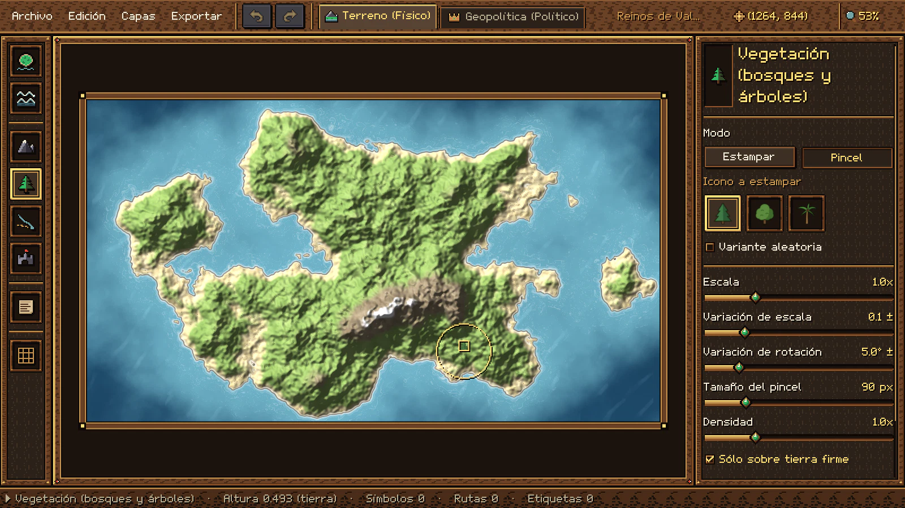
Etapa 1 · TerrenoStage 1 · Terrain
- Eleva continentes, hunde mares, suaviza y aplana con pinceles de caída suave.Raise continents, sink seas, smooth and flatten with soft-falloff brushes.
- Costas, profundidad del agua, oleaje y anillos de costa calculados al momento.Coastlines, water depth, waves and coastal rings computed on the fly.
- Sombreado de relieve y curvas de nivel opcionales; nivel del mar ajustable.Optional hillshading and contour lines; adjustable sea level.
- Montañas, colinas y bosques con estampado o pincel de dispersión.Mountains, hills and forests with stamping or a scatter brush.
- Ríos que se ensanchan hacia la desembocadura y caminos discontinuos.Rivers that widen toward the mouth, and dashed roads.
- Ciudades, castillos, ruinas, etiquetas y rejilla cuadrada o hexagonal.Cities, castles, ruins, labels and a square or hex grid.
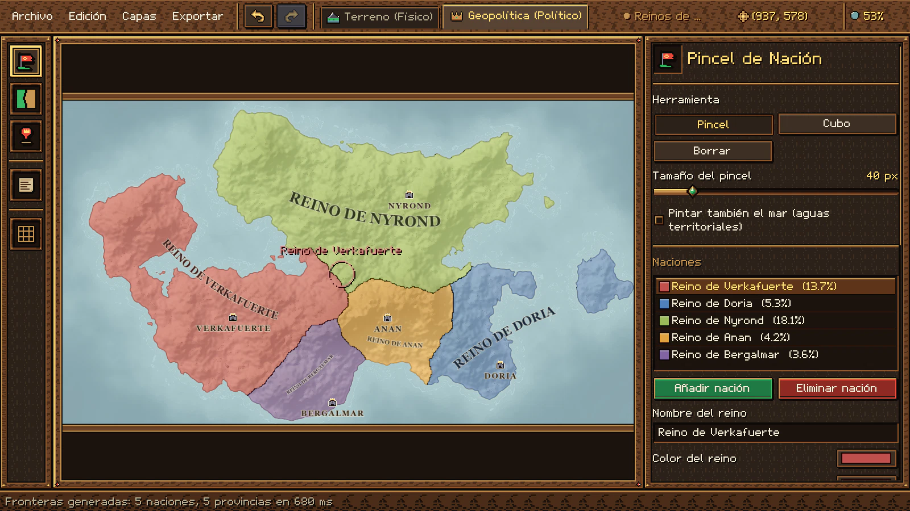
Etapa 2 · GeopolíticaStage 2 · Geopolitics
- El terreno se aplana a un atlas de pergamino y aparece el color de cada reino.The terrain flattens into a parchment atlas and each kingdom's color appears.
- Pincel y cubo de nación; las aguas territoriales son opcionales.Nation brush and bucket; territorial waters are optional.
- Fronteras automáticas a partir de tus capitales, que siguen costas y cordilleras.Automatic borders from your capitals that follow coastlines and mountain ranges.
- Capitales, ciudades, villas y puertos con su etiqueta enlazada.Capitals, cities, villages and ports with their linked labels.
- Límites trazados a mano: continuos, punteados o discontinuos.Hand-drawn borders: solid, dotted or dashed.
- Territorios en disputa con franjas de los colores de quienes los reclaman.Disputed territories striped in the colors of those who claim them.
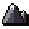
HerramientasTools
Cada herramienta tiene su ranura y su tecla, igual que en la barra del editor. Elige una (o pulsa su tecla mientras ves esta sección) para ver qué hace en el inspector. Each tool has its slot and its key, just like in the editor's toolbar. Pick one (or press its key while viewing this section) to see what it does in the inspector.
Etapa 1 · TerrenoStage 1 · Terrain
Etapa 2 · GeopolíticaStage 2 · Geopolitics
En las dos etapasIn both stages
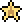
FacilidadesFeatures
Pequeñas cosas que hacen que dibujar un mundo entero sea cómodo y seguro.Small things that make drawing a whole world comfortable and safe.
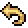
Deshacer en todoUndo everythingCada trazo, sello, borrado o cambio político se deshace con Ctrl+Z y se rehace con Ctrl+Y.Every stroke, stamp, deletion or political change can be undone with Ctrl+Z and redone with Ctrl+Y.
 Un solo archivo .mapA single .map file
Un solo archivo .mapA single .map file
Terreno, símbolos, ríos, etiquetas, reinos, disputas y ajustes en un único archivo abierto (ZIP con JSON legible).Terrain, symbols, rivers, labels, kingdoms, disputes and settings in one open file (a ZIP with readable JSON).
 Exportación nítidaCrisp exports
Exportación nítidaCrisp exports
PNG de 0,5× a 4× sin marco ni guías. Lo que ocultas en el menú Capas tampoco se exporta y la rejilla es opcional.PNG from 0.5× to 4× with no frame or guides. Whatever you hide in the Layers menu isn't exported either, and the grid is optional.
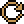
Mundos al azarRandom worldsEmpieza con un continente generado por ruido procedural o con un lienzo bajo el agua para dibujarlo a mano alzada.Start with a continent generated from procedural noise, or with an underwater canvas to draw freehand.
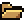
Tus propios assetsYour own assetsCopia PNG o WebP en una carpeta y pulsa Recargar. Sets por subcarpeta, config.json con escala, giro y tinte, y texturas propias de tierra, agua y fronteras.Copy PNG or WebP files into a folder and press Reload. Sets by subfolder, config.json with scale, rotation and tint, and your own land, water and border textures.
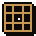
Capas y rejillaLayers and gridMuestra u oculta cada capa y superpone una rejilla cuadrada o hexagonal con su tamaño, grosor, color y desplazamiento.Show or hide each layer and overlay a square or hex grid with its own size, thickness, color and offset.
Nombres que se adaptanNames that adapt
El nombre de cada reino se centra, se gira y se curva siguiendo su territorio. Las villas se ocultan al alejar la vista.Each kingdom's name centers, rotates and curves to follow its territory. Villages hide when you zoom out.
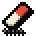
Borrar sin miedoErase without fearBorrador para cualquier elemento, clic derecho en cada herramienta y vaciado de capas con confirmación.An eraser for any element, right-click in every tool, and clearing whole layers with confirmation.
 Nada se pierdeNothing gets lost
Nada se pierdeNothing gets lost
Si cierras la ventana o vuelves al menú con cambios sin guardar, el editor te pregunta antes.If you close the window or go back to the menu with unsaved changes, the editor asks first.
Fluido en mapas grandesSmooth on large maps
El pincel responde en pocos milisegundos y las fronteras automáticas de un mapa 1080p se calculan en menos de un segundo.The brush responds in a few milliseconds and automatic borders for a 1080p map are computed in under a second.
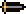
Interfaz pixel art nítidaCrisp pixel art interfaceSe escala sólo por números enteros, con fuente y cursores propios: nunca se ve borrosa.It only scales by whole numbers, with its own font and cursors: it never looks blurry.
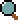
Atajos para todoShortcuts for everythingZoom hacia el cursor, desplazamiento con espacio y una tecla por herramienta para no soltar el ratón.Zoom toward the cursor, pan with the space bar and one key per tool so you never let go of the mouse.
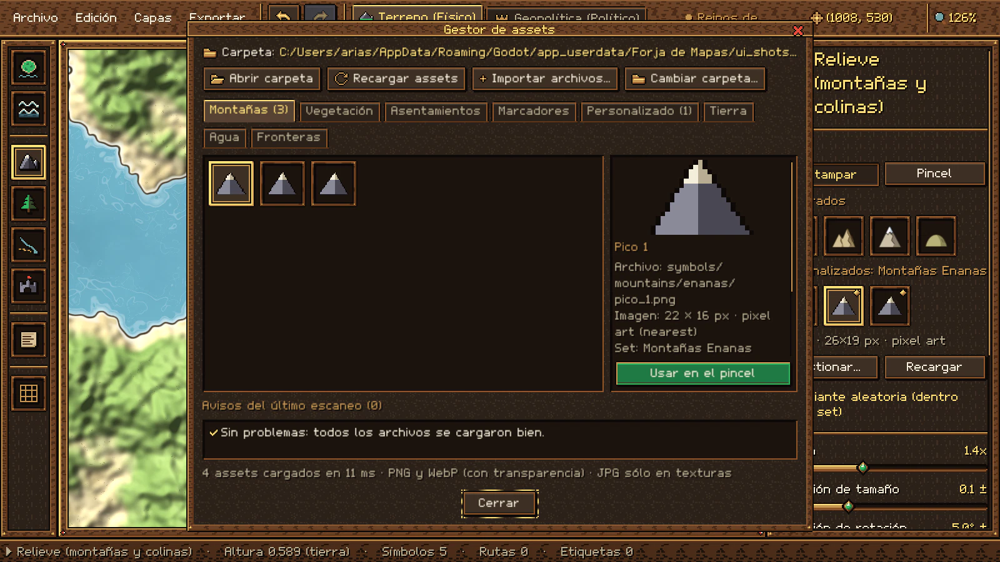
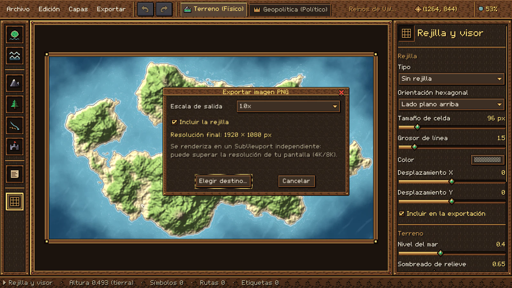
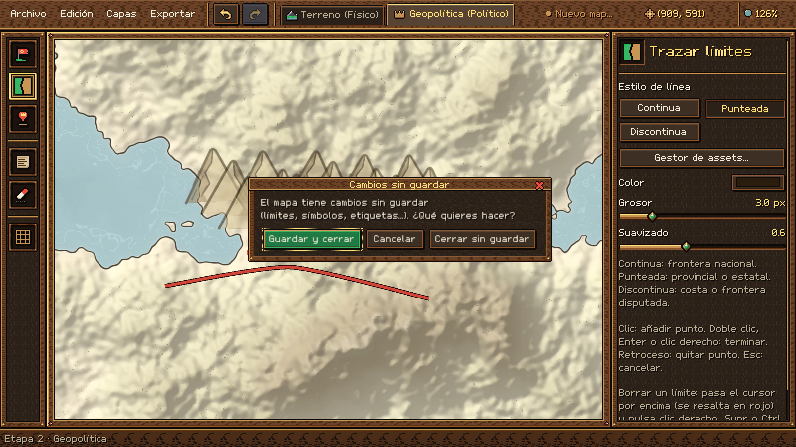
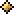
Qué lo hace distintoWhat makes it different
Muchos editores de mapas se centran en pintar una imagen bonita y muchos generadores en crear un mundo al azar. Chunksforge junta las dos cosas: control a mano de cada colina y un mundo político que se calcula solo. Many map editors focus on painting a pretty picture, and many generators on creating a random world. Chunksforge brings both together: hand control over every hill and a political world that computes itself.
El terreno es una imagenThe terrain is an image
Se pinta con texturas, sin altura real.It's painted with textures, with no real height.
Un heightmap de verdadA real heightmap
Esculpes la altura: el mar, las costas, el sombreado de relieve y las curvas de nivel salen de ella, y el nivel del mar se mueve con un deslizador.You sculpt the height: the sea, coastlines, hillshading and contour lines come from it, and the sea level moves with a slider.
Lo político va apartePolitics is separate
Reinos y fronteras en capas manuales o en otro programa.Kingdoms and borders on manual layers or in another program.
Dos etapas en un proyectoTwo stages, one project
El terreno físico y la geopolítica conviven en el mismo mapa; la capa política se superpone sin tocar el terreno.Physical terrain and geopolitics live in the same map; the political layer sits on top without touching the terrain.
Fronteras línea a líneaBorders line by line
Cada frontera se dibuja a mano.Every border is drawn by hand.
Fronteras que entienden el terrenoBorders that understand the terrain
Un Voronoi geodésico reparte la tierra desde tus capitales: no cruza el mar y se frena en las cordilleras. Y si quieres, también las trazas a mano.A geodesic Voronoi divides the land from your capitals: it doesn't cross the sea and slows at mountain ranges. And if you want, you can draw them by hand too.
Conflictos con apañosConflicts with workarounds
Zonas disputadas marcadas con trucos de color.Disputed areas marked with color tricks.
Territorios en disputaDisputed territories
Franjas diagonales con los colores de cada reino que la reclama, frontera discontinua, nombre propio y una forma de resolverla a favor de quien elijas.Diagonal stripes in the colors of each kingdom that claims it, a dashed border, its own name and a way to resolve it in favor of whoever you choose.
Sin cifrasNo numbers
No sabes cuánto ocupa cada reino.You don't know how much each kingdom covers.
Estadísticas a la vistaStatistics in view
Porcentaje del mapa por reino, por provincia y por zona en disputa, que no se suma a ninguno de los reclamantes.Share of the map per kingdom, per province and per disputed zone, which isn't added to any of the claimants.
Recursos propios con pasos extraCustom resources take extra steps
Importadores o formatos especiales.Importers or special formats.
Una carpeta y "Recargar"A folder and "Reload"
Tus PNG aparecen en la paleta con su marca dorada; si falta uno, el mapa conserva su sitio con un marcador "?".Your PNGs show up in the palette with their gold badge; if one goes missing, the map keeps its place with a "?" marker.
Suscripciones y nubeSubscriptions and the cloud
Muchas herramientas web piden pagar cada mes y trabajar conectado.Many web tools ask for a monthly fee and an online connection.
Tu mapa es tuyoYour map is yours
Un solo pago. Tras activar la licencia, diseñas y exportas sin conexión. Los mapas que creas son tuyos, también para uso comercial, y el .map es un ZIP con JSON fácil de respaldar.A single payment. After activating your license, you design and export offline. The maps you create are yours, commercial use included, and the .map file is a ZIP with JSON that's easy to back up.
Interfaces genéricasGeneric interfaces
Ventanas y botones de siempre.The usual windows and buttons.
Un grimorio de RPGAn RPG grimoire
Paneles de madera, pergamino y oro, fuente propia y cursores de guantelete: dibujar un mundo se siente como jugar en uno.Wood, parchment and gold panels, its own font and gauntlet cursors: drawing a world feels like playing in one.
GaleríaGallery
Mapas exportados y capturas reales del programa. Haz clic para verlas en grande.Exported maps and real screenshots of the program. Click to view them larger.
PrecioPrice
Un solo pago y Chunksforge es tuyo: sin suscripciones y sin cargos recurrentes.One payment and Chunksforge is yours: no subscriptions and no recurring charges.
Precio: 16 dólares estadounidenses, pago único.Price: 16 US dollars, one-time payment.
Sin suscripción ni pagos recurrentes.No subscription or recurring payments.
Pago seguro a través de Lemon Squeezy (Merchant of Record). Todas las compras son definitivas y no reembolsables.Secure payment through Lemon Squeezy (Merchant of Record). All purchases are final and non-refundable.
Qué incluyeWhat's included
- Chunksforge completo: las dos etapas y todas sus herramientas.The complete Chunksforge: both stages and all its tools.
- Software de escritorio digital: se entrega como descarga, sin envío físico.Digital desktop software: delivered as a download, with no physical shipping.
- Licencia para un usuario y un equipo, vinculada a tu correo. Los cambios de equipo se solicitan a soporte.A single-user, single-device license linked to your email. Moving to a new computer is requested through support.
- Tras activar la licencia, diseñas y exportas mapas sin conexión, sin telemetría.After activating your license, you design and export maps offline, with no telemetry.
- Los mapas que creas son 100 % tuyos, también para uso comercial y sin regalías.The maps you create are 100% yours, commercial use included and royalty-free.
- Soporte por correo:Email support: desarrolloindependiente@
outlook.com
Antes de comprar, consulta el Acuerdo de Licencia (EULA), los Términos del Servicio y la Política de Privacidad. Before buying, please read the License Agreement (EULA), the Terms of Service and the Privacy Policy.
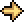
EmpezarGet started
Tu primer mapaYour first map
- Instala Chunksforge y activa tu licencia con el correo de tu compra. Después, todo funciona sin conexión.Install Chunksforge and activate your license with the email you purchased with. After that, everything works offline.
- En el menú, Nuevo Mapa: elige nombre, resolución y si empiezas con un mundo al azar o a mano alzada.In the menu, choose Nuevo Mapa (New Map): pick a name, a resolution and whether you start with a random world or freehand.
- Esculpe con Tierra y Agua, estampa relieve y bosques y traza los ríos.Sculpt with Tierra (Land) and Agua (Water), stamp relief and forests, and draw the rivers.
- Pasa a la Etapa 2 con Ctrl+2, coloca capitales y pulsa Generar Fronteras Automáticas.Switch to Stage 2 with Ctrl+2, place capitals and press Generar Fronteras Automáticas (Generate Automatic Borders).
- Guarda con Ctrl+S y exporta tu PNG con Ctrl+E.Save with Ctrl+S and export your PNG with Ctrl+E.
Note: the program's interface is currently in Spanish.
Atajos de tecladoKeyboard shortcuts
- RuedaWheel
- Zoom hacia el cursorZoom toward the cursor
- EspacioSpace + arrastrardrag
- Desplazar la vista (también botón central)Pan the view (also the middle button)
- Ctrl+0
- Encajar el mapa en la vistaFit the map to the view
- Ctrl+Z / Y
- Deshacer / rehacerUndo / redo
- Ctrl+S
- Guardar (con Mayús: guardar como)Save (with Shift: save as)
- Ctrl+E
- Exportar PNGExport PNG
- Ctrl+1 / 2
- Etapa física / políticaPhysical / political stage
- Clic derechoRight-click
- Borrar lo que hay bajo el cursorDelete what's under the cursor